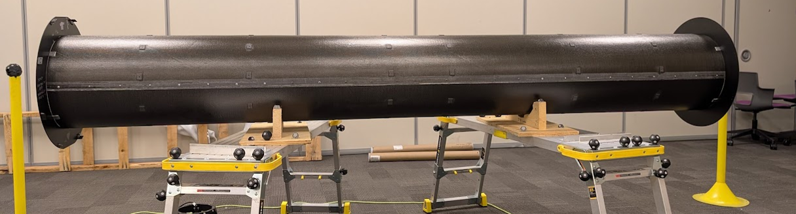
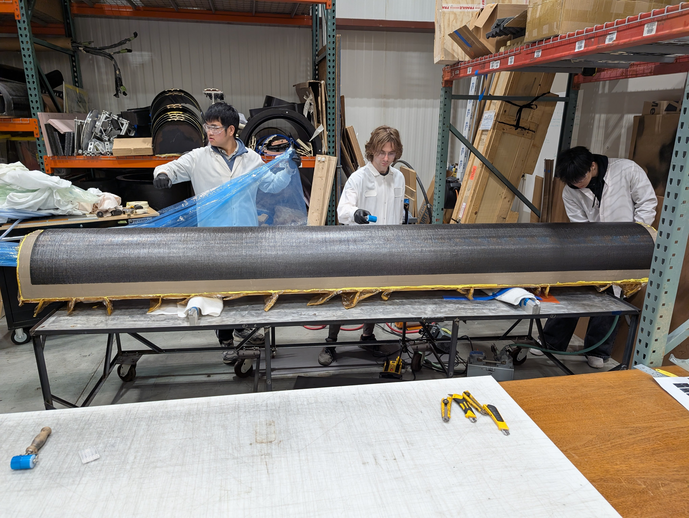
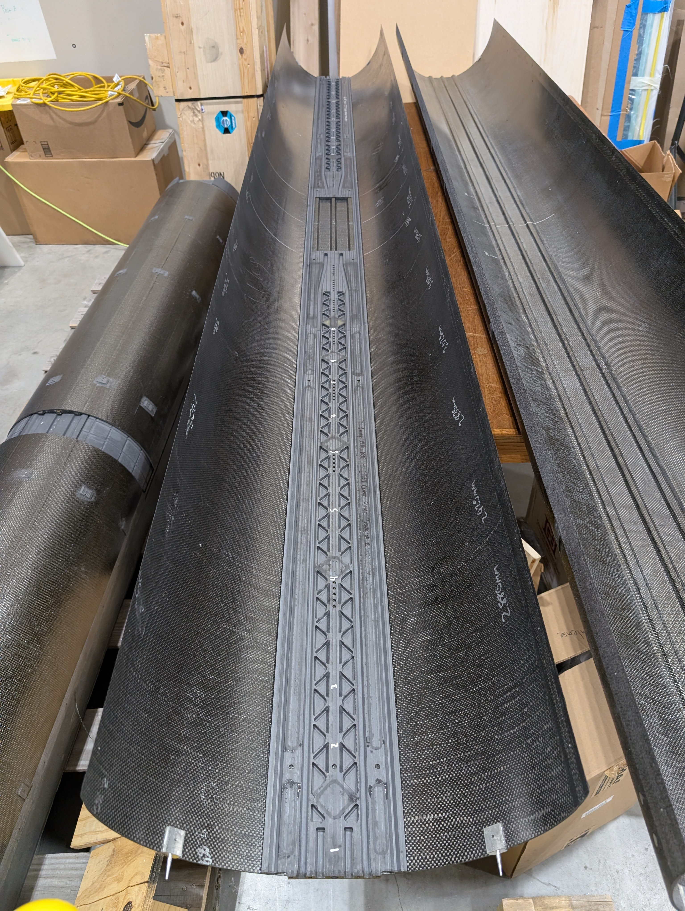
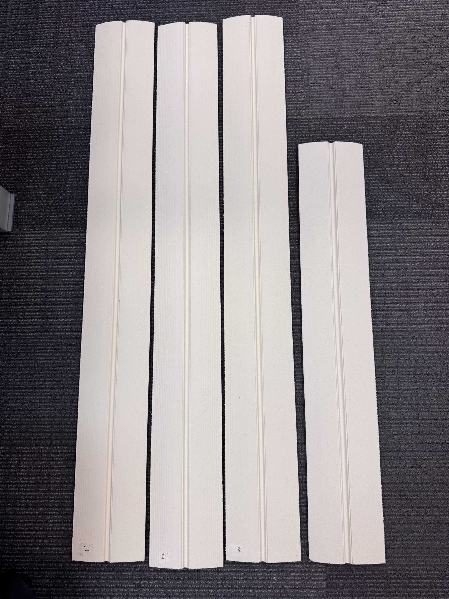

CERN CMS Inner Tracker
Support Tube
Composite Manufacturing | CNC Process Development | Dimensional Metrology | Production Engineering
- Prepreg layup
- CNC/CAM
- Laser scanning
- Dimensional inspection
- Production coordination

- ORGANIZATION
- Purdue University, Composites Manufacturing and Simulation Center (CMSC)
- PROJECT
- CERN CMS High-Luminosity LHC Upgrade
- ROLE
- Research Engineer Intern / Manufacturing Team Contributor
- PERIOD
- 2025–2026
Project overview
The Inner Tracker Support Tube (ITST) is a carbon-fiber composite structure being developed for the Compact Muon Solenoid (CMS) detector’s High-Luminosity LHC upgrade at CERN. Approximately 3 m long and 400 mm in diameter, it combines complex laminate geometries, partially cored sandwich regions, cooling features, and integrated mounting components. Careful dimensional control is needed for compatibility with surrounding detector assemblies.
At Purdue’s Composites Manufacturing and Simulation Center, I have contributed across the manufacturing cycle: prototype development, full-scale composite layup, CNC machining, dimensional inspection, and production coordination. My responsibilities grew from supporting manufacturing operations to independently developing machining processes and helping coordinate critical production activities.
Composite manufacturing
I participated in fabricating multiple reduced-length ITST prototypes to evaluate materials, tooling, layup procedures, and curing processes before full-scale production. The work included prepreg ply and foam-core preparation, layup planning, vacuum bagging, and manufacturing execution.
I later contributed to full-scale half-cylinder layups involving large carbon-fiber prepreg plies and geometrically complex tooling. These multi-day builds required coordination of material preparation, personnel, ply sequencing, and the production schedule.

Dimensional metrology and geometric correction
Working with another student, I helped develop a laser-scanning and dimensional-analysis workflow for the approximately 3 m-long structures. Capturing their geometry required multiple instrument positions and careful alignment because of the component size and challenging surface characteristics.
Measurements supported evaluation of corrective fixtures and loading approaches. I contributed to repeated cycles of fixture fabrication, implementation, scanning, and deviation analysis. The original structure ultimately required replacement tooling with revised shape compensation.

Precision CNC machining and process development
I developed machining procedures for complex, double-sided polymer track components used in the ITST assembly. Starting with CAD geometry and dimensional requirements, I independently developed CAM operations, fixturing strategies, machining parameters, and inspection procedures.
Early trials exposed natural stock bowing, clamping-induced deformation, and challenges finishing curved surfaces. I investigated these issues with dial indicators, dimensional measurements, and laser-scan deviation analysis.
Successive trials led to revised clamping procedures, toolpaths, locating features, and dedicated fixture concepts. The work established a repeatable process basis for subsequent manufacturing and highlighted the importance of controlling workpiece deformation and reference geometry.



Production engineering
After the track development work, I took responsibility for machining the production foam cores needed for a subsequent full-scale ITST layup. I developed machining and inspection procedures while working to a fixed production schedule.
When software licensing problems made a planned five-axis workflow unavailable, I switched to an alternative CNC/CAM workflow prepared as a contingency. I delivered the required foam-core batches in time for the scheduled layup, and also contributed to personnel scheduling, ply preparation, and broader manufacturing coordination.

Engineering outcomes
This project has given me practical experience connecting manufacturing process development with dimensional validation and production execution. It has strengthened my ability to investigate unexpected manufacturing behavior, revise technical approaches using measured evidence, and make engineering decisions under schedule and resource constraints.